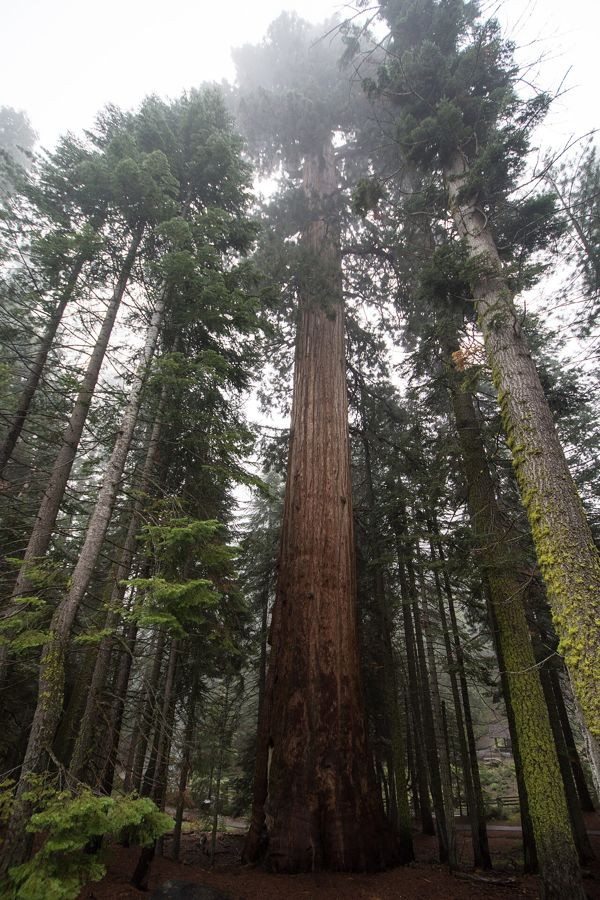
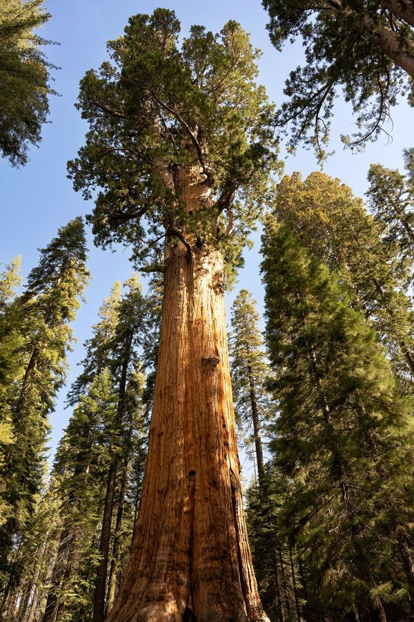

The route starts at the Sherman Tree trailhead on the Generals Highway, about 7,000 feet up. The paved trail descends through the grove.
Photo: m01229 from USA · CC BY-SA 2.0 · Wikimedia Commons

You have reached the General Sherman Tree, by volume the largest known living tree on Earth.
Photo: Eric Kilby from Somerville, MA, USA · CC BY-SA 2.0 · Wikimedia Commons